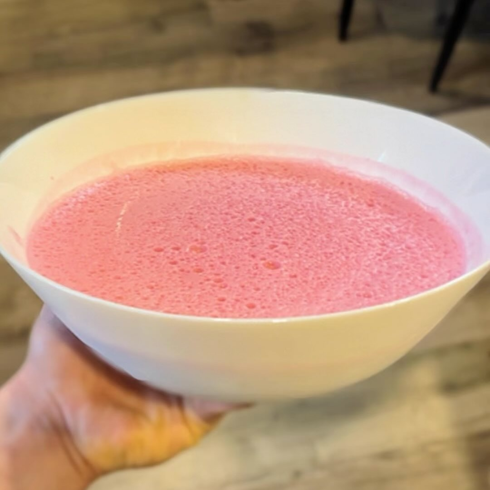

Gelatina Proteina (3 ingredientes)
Ingredientes:
- 1 taza yoghurt griego
- 1 taza de agua caliente
- 1 scoop de proteína
- 1 paquete de gelatina (cero azúcar o azúcar reducida, busca una opción sin calorías)
- una pizca de sal (opcional)
- fruta picada (opcional, puedes agregarla después de licuar)
Instrucciones:
- En un bowl con el agua caliente, añadir la gelatina y revolver
- En la licuadora, licuar el yogur, la proteina y la gelatina
- Mandar mezcla a un bowl para refrigerar un par de horas